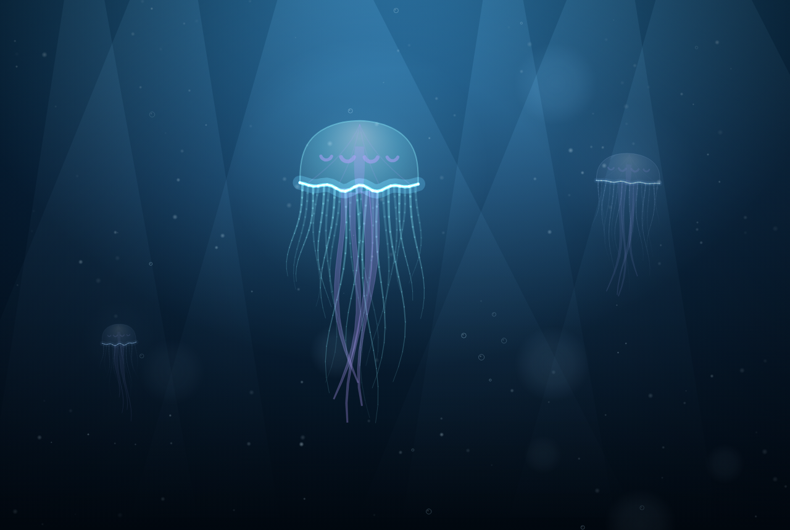
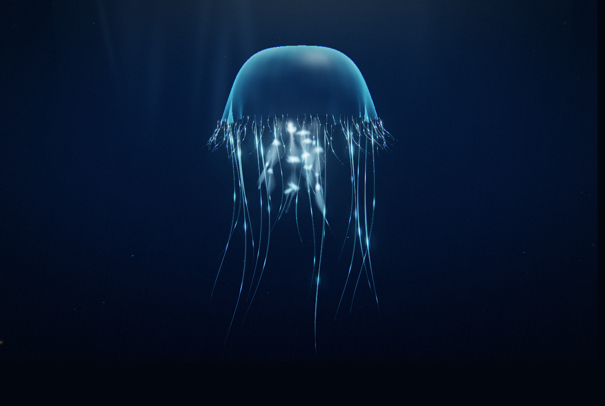
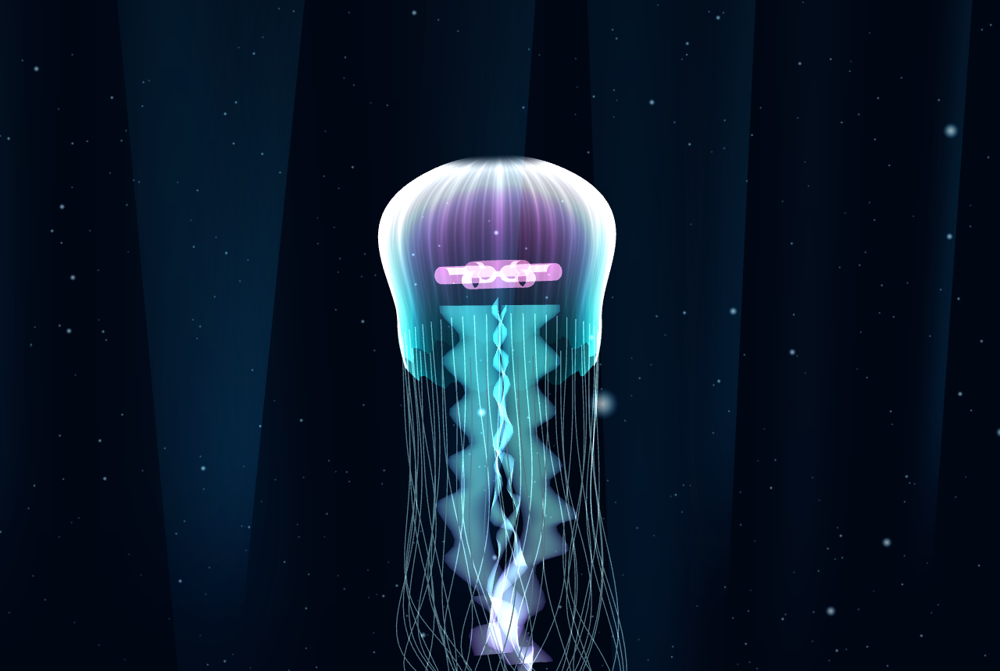
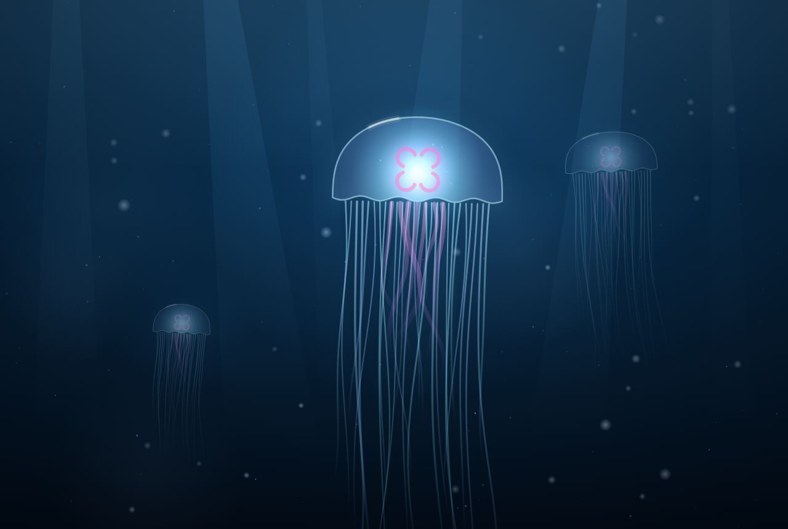
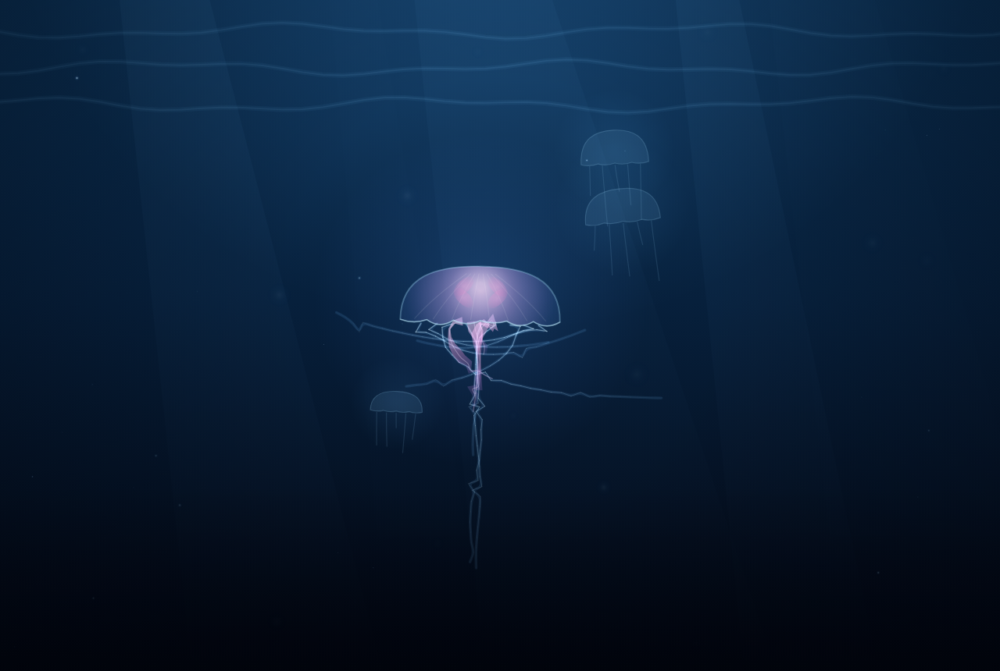
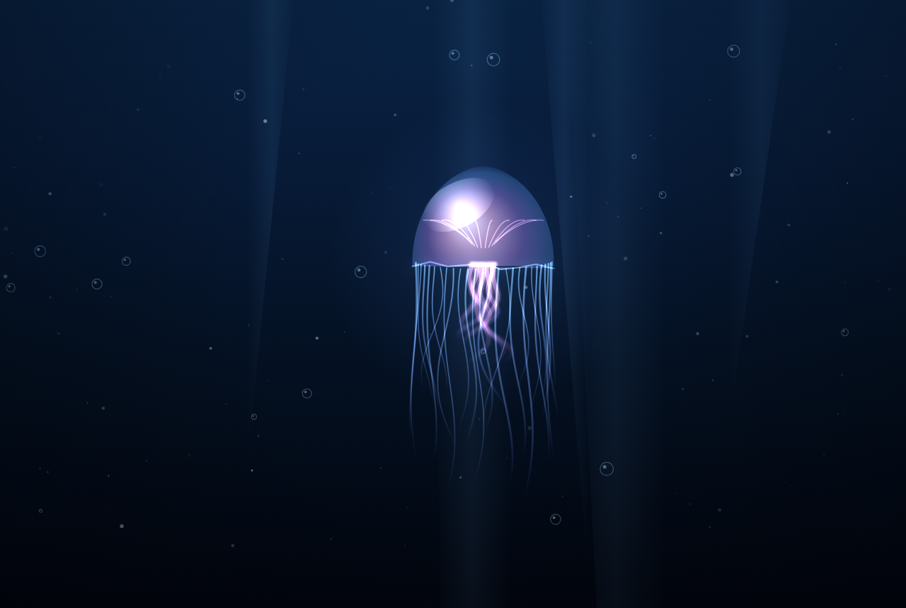
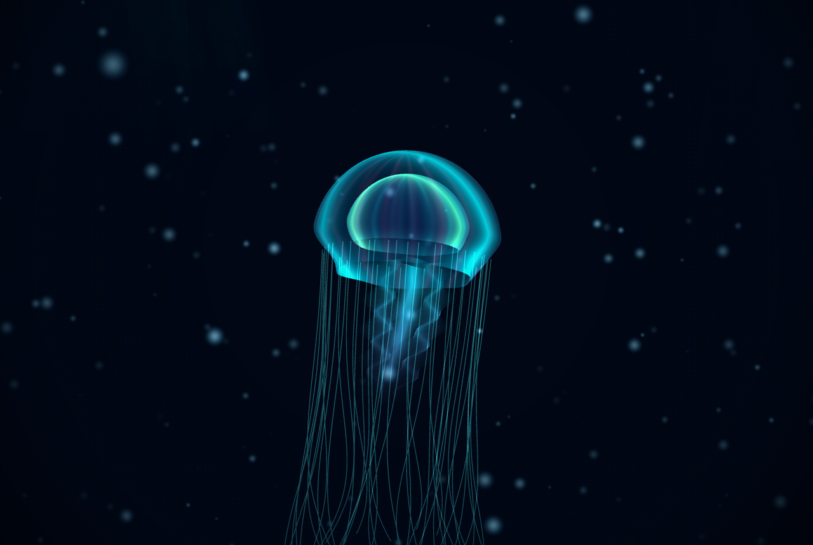
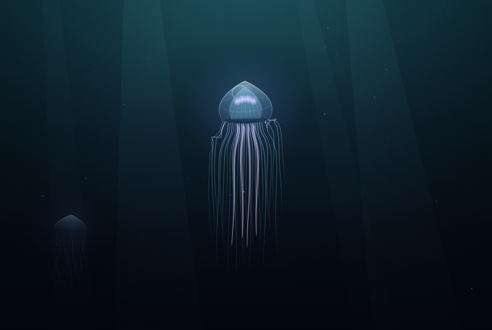
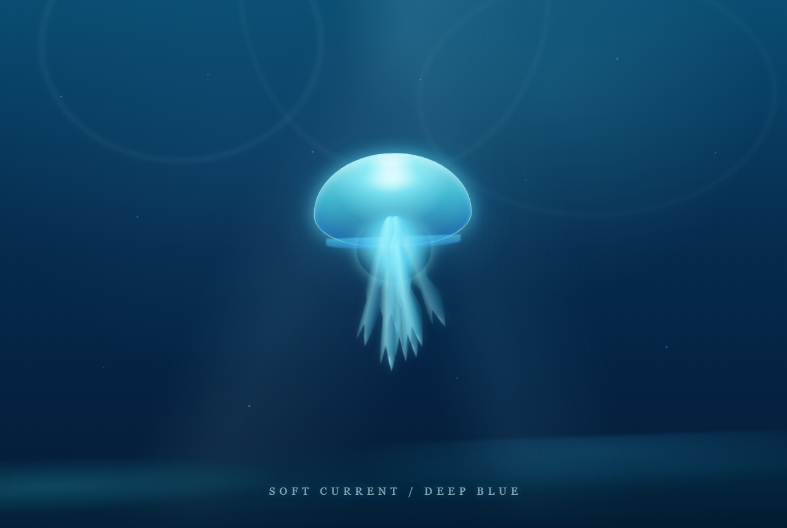

#188Jev

伞体通透感75
柔体律动89
水下光线97
整体美感94
#286Jev

伞体通透感81
柔体律动93
水下光线85
整体美感86
#384Jev

伞体通透感93
柔体律动58
水下光线94
整体美感92
#481Jev

伞体通透感71
柔体律动79
水下光线91
整体美感88
#580Jev

伞体通透感68
柔体律动80
水下光线90
整体美感84
#676Jev

伞体通透感68
柔体律动73
水下光线87
整体美感78
#774Jev

伞体通透感65
柔体律动73
水下光线85
整体美感73
#865Jev

伞体通透感63
柔体律动34
水下光线84
整体美感83
#962Jev

伞体通透感59
柔体律动62
水下光线64
整体美感63
#1047Jev
伞体通透感62
柔体律动35
水下光线33
整体美感57